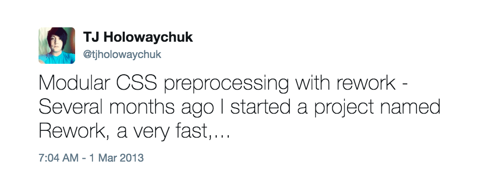
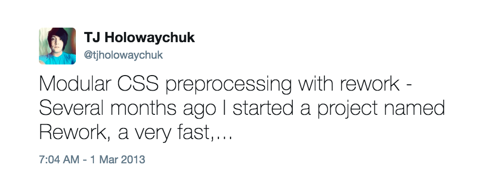

Мой ванильный CSS

Вадим Макеев, HTML Академия


@mixin parent
@if &
&:hover
color: red
@else
a
color: red
class parent
def set_foo(n)
@foo = n
end
def set_bar(n)
@bar = n
end@include mq($from:lap, $until:desk) {@include layout($layout:6) {&__logo {@include span(2 at 1);}&__menu {@include span(4 at 3);
.ui-Link&-Content@supports (background-position: 0 calc(50% + 0.75em))^[0][href] &background-image: linear-gradient($Colors.Link…)^[0][href]:hover &background-image: linear-gradient($Colors.Link…)
isEqual: (other) ->if @scopes.length isnt other.scopes.lengthreturn falsefor scope, i in @scopesif scope isnt other.scopes[i]return falsetrue
(да)
(нет)

a {--red: #d33;&:hover {color: color(var(--red) a(54%));}}
Черновик CSS Color L4 и салфетка CSS Nesting.
@svg-load nav url(img/nav.svg) {fill: #cfc;}.nav {background: svg-inline(nav);}
Плагин postcss-inline-svg.
.foo {position: absolute 10px 0;}.foo {position: absolute;top: 10px; right: 0; bottom: 10px; left: 0;}
acolor: blue.multiline,.selectorbox-shadow:1px 0 9px rgba(0, 0, 0, .4)1px 0 3px rgba(0, 0, 0, .6)

Fantasy Style Sheets
with (element.style) {position = 'relative';top = left = '5px';}// element.style.position// element.style.top
Пожалуйста, не надо.
:root {--shower-ratio: 1.6;--shower-width: 1024px;--shower-height: calc(var(--shower-width) /var(--shower-ratio));}
@media (min-width: 320px) {.page__body {font-size: calc(1rem + ((2 - 1) * 16)* (100vw - 320px) / (848 - 320));}}

<!DOCTYPE html><head><link href="/screen.css" rel="stylesheet"></head><header block="header"><h1 elem="logo" mod="index"><span elem="type">Dev.Opera</span>
<!DOCTYPE html><head><link href="screen.css" rel="stylesheet"></head><header class="header"><h1 class="header__logo header__logo--index"><span class="type">HTML Academy</span>
@import 'styles/fonts.css';@import 'styles/page.css';@import 'styles/title.css';@import 'styles/banner.css';@import 'styles/content.css';@import 'styles/form.css';@import 'styles/footer.css';
return gulp.src('index.html').pipe(posthtml([require('posthtml-minifier')({collapseWhitespace: true})]))
И другие полезные плагины для PostHTML.
return gulp.src('screen.css').pipe(postcss([require('postcss-import')(),require('postcss-url')(), // Правит путиrequire('autoprefixer')(),require('postcss-csso')()]))
 

with и почему его не стоит использовать, Михаил Давыдов